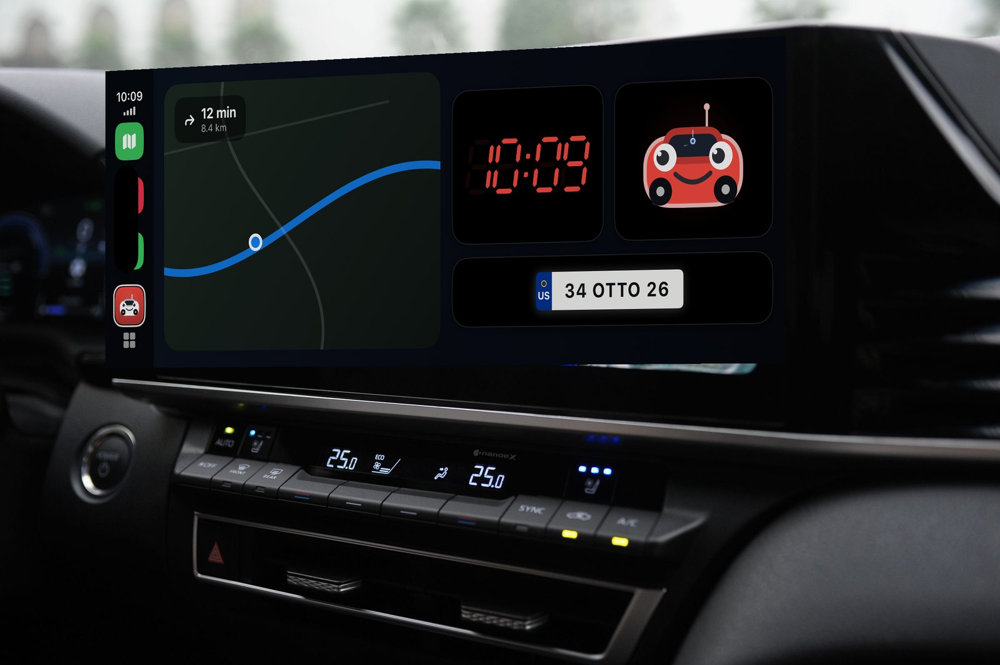
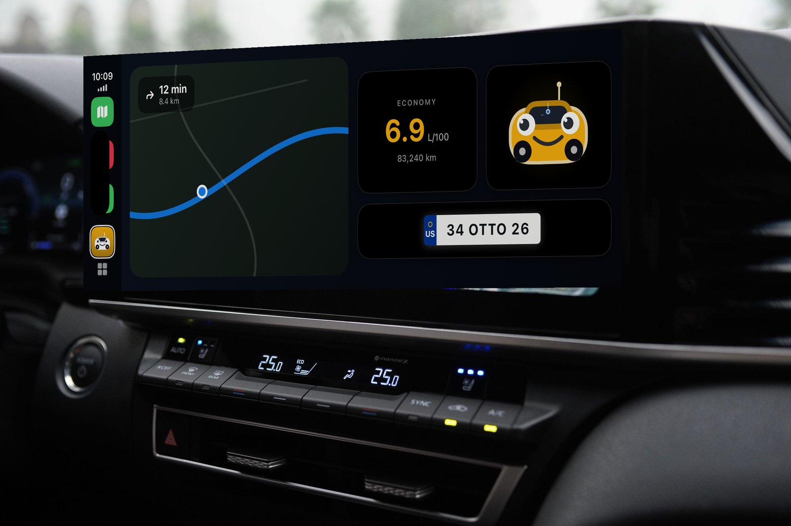
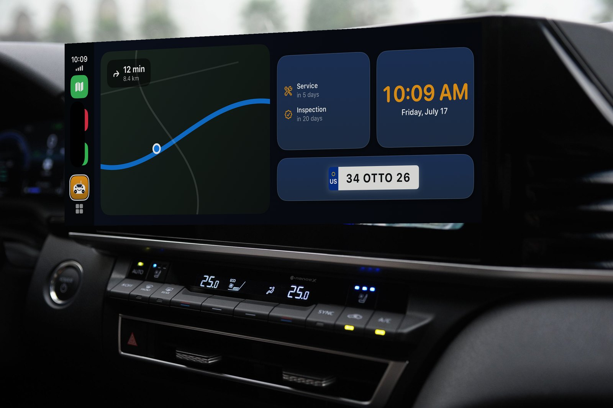
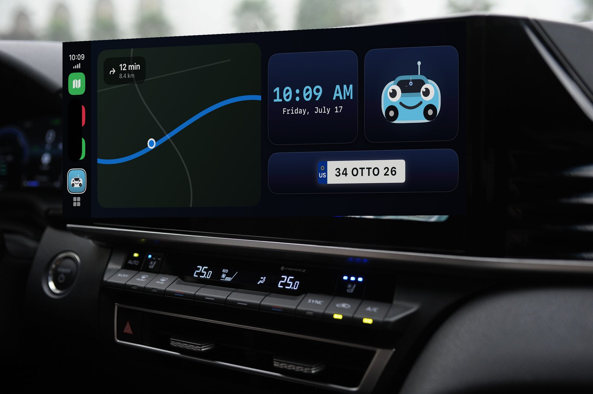
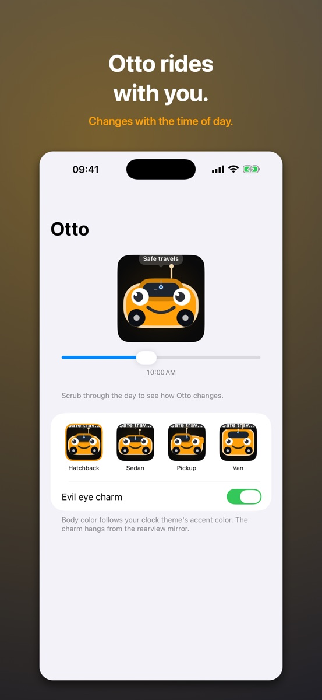
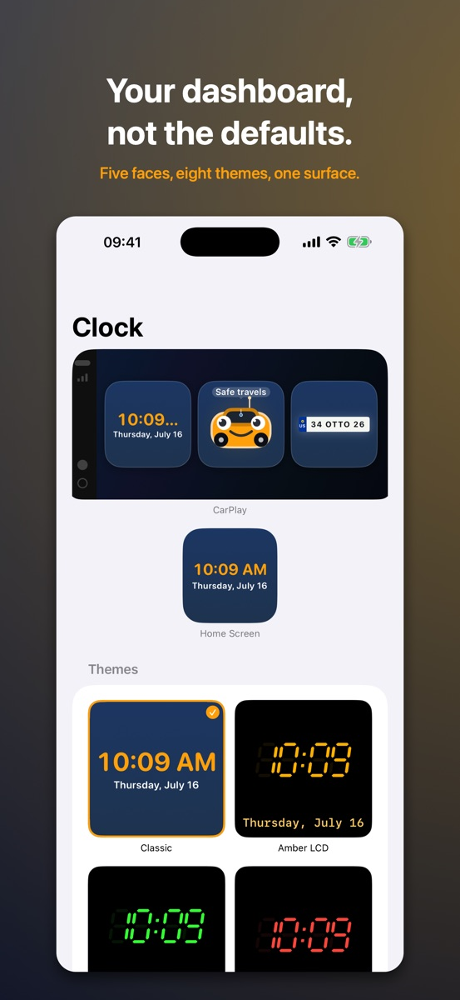
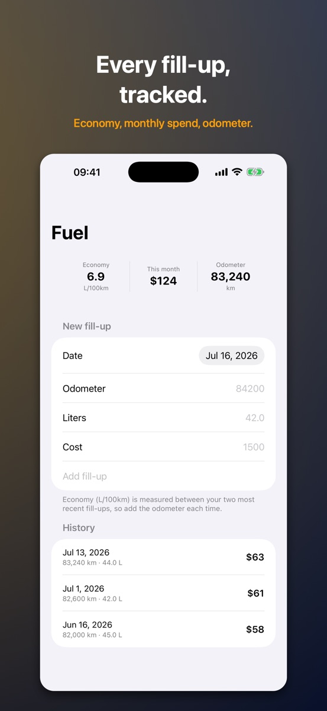
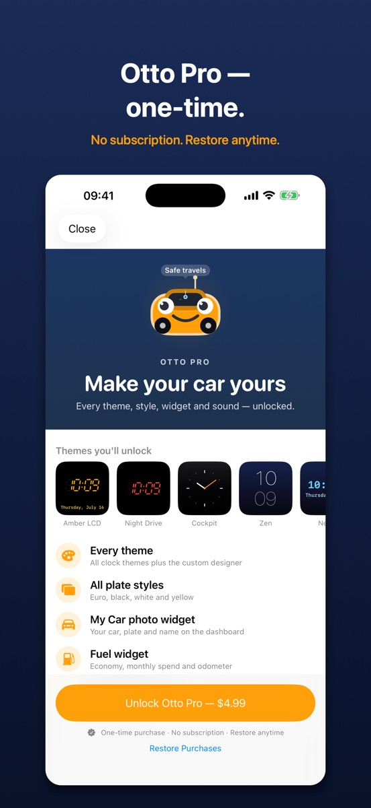

Otto
Your car's dashboard, finally yours.
Otto fills your car's dashboard with widgets that actually belong there — a clock in the face you choose, your license plate, a countdown to inspection and insurance, your fuel and even a photo of your car.
Download on the App StoreOne-time Otto Pro · No subscription · Nothing leaves your phone




Otto on the CarPlay dashboard — clock, fuel, reminders, your plate, your theme.




What Otto puts on your dashboard
One dashboard, not five
Every widget shares the same surface, accent and edge — the screen reads as one designed board.
Five faces, eight themes
Digital, analog, retro LCD and more. Each widget is set up on its own, so three clocks can each look different.
Your plate, any country
Euro band, black, white or yellow, with the country code you choose. Not built for one country.
Fuel, at a glance
Log each fill-up; Otto works out your economy, this month's spend and your odometer.
Never miss inspection
Enter your dates once and Otto counts down — and reminds you 30 days, 7 days and the morning of.
Otto himself
A little car with a face that reads the clock: sleepy at midnight, bright at noon, headlights on after dark.
Free, with Otto Pro when you want more
The clock, license plate, car dates and parking are free. Otto Pro is a one-time purchase — no subscription — that unlocks every theme and the custom designer, all plate styles, the car photo and fuel widgets, and custom sounds. Buy once, yours forever.
Guides
Short, specific answers from building for the CarPlay dashboard: adding widgets to the dashboard, why widgets look bare in the car, a readable clock, welcome sound and automatic parking. All guides.
Support
Something broken, or an idea for what Otto should do next? Write to kburakengin@gmail.com and you'll get a reply from a person.
Include your iPhone model and iOS version if you're reporting a bug — it saves a round trip.
Common questions
The welcome sound doesn't play when CarPlay connects.
iOS does not let an app create automations on your behalf, so this needs a one-time
automation in the Shortcuts app. Otto's Setup tab walks you through it. The usual
culprit is the automation being set to ask before running — open it in Shortcuts and
make sure Run Immediately is selected.
My parking spot isn't saved automatically.
The disconnect automation needs the Save Parking Spot action, and location
access must be set to Always — otherwise iOS won't let Otto read your
location while it's in the background.
The widgets aren't on my car's screen.
On your iPhone: Settings → General → CarPlay → your car, then add Otto's widgets to
the dashboard.
Privacy
Otto collects nothing. There is no account, no server and no analytics — see the privacy policy.